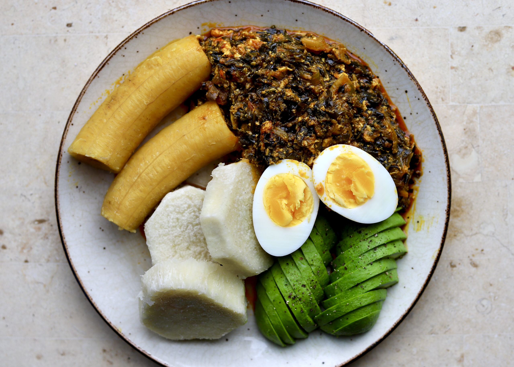

Yam And Kontomire

Discription
Okra soup is a fascinating dish because of its many permutations across West Africa and its reinvention in the Americas as gumbo. Creole gumbo usually features a roux (a thickening agent made with a fat such as butter, mixed with flour) and is typically served over hot rice.
Ingredients
- 1 medium-sized salmon
- 1 lb smoked turkey (Note: traditionally most people tend to use beef)
- 1 pound Okro (Note: Ghanaians call okra "okro")
- 2 cloves garlic
- 3 medium tomatoes
- 1 large onion
- 2 chili peppers (scotch bonnets or other red chilis are best), ground or finely chopped
- 3 garden eggs (Substitute aubergines if unavailable)
- 1/2 cup palm oil
- Salt to taste
Steps
- Chop half of the pound of okra, then grate the other half. The smaller you cut the okra, the better the draw will be.
- Cut the stalks off the garden eggs and cut them in half.
- Soak the garden eggs and the okra for 10 minutes before transferring them to a pot to boil until the garden eggs turn translucent. Remove from flame.
- In a separate pot, pour 1/2 cup of palm oil. When the oil is hot, add the onion, ginger, bouillion cubes, ground chili pepper and garlic. (Optional: add some ground ginger). As the mixture softens, add tomato and mushrooms, and continue to let it simmer over the fire.
- Allow the pot with the palm oil mixture to continue cooking for 2 to 3 minutes before adding the smoked turkey and fish. Once the turkey and fish are sufficiently cooked, add the okra mixture.
- Add the okra into the mixture by turning it from the bottom of the pot to the top. Allow the mixture to cook for another 10 minutes. The okra is added last in order to avoid over-cooking it.
- Serve when ready alongside banku (for Ghanaians) or rice (my personal preference).